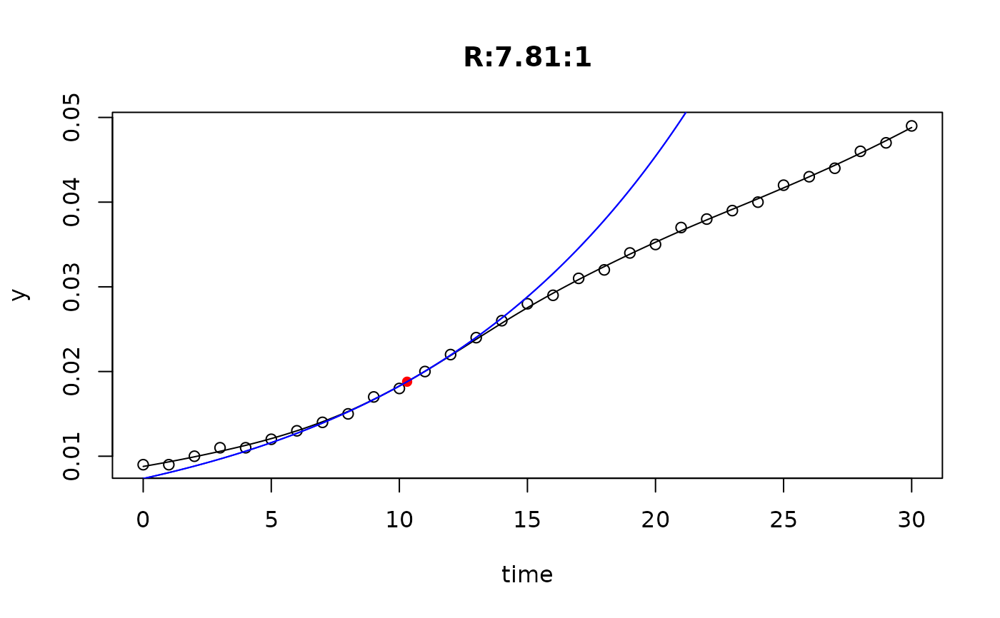
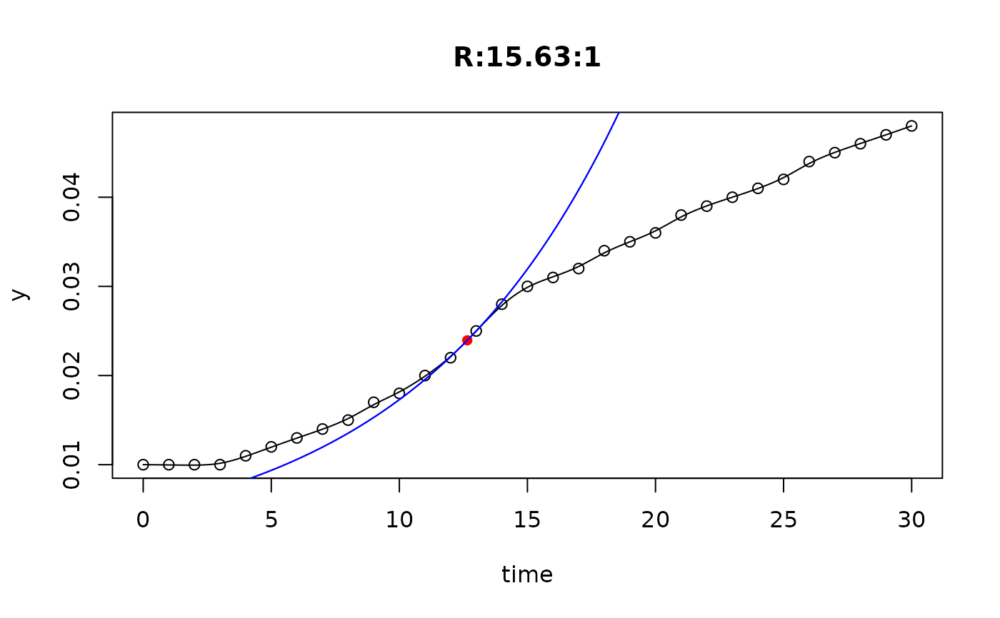
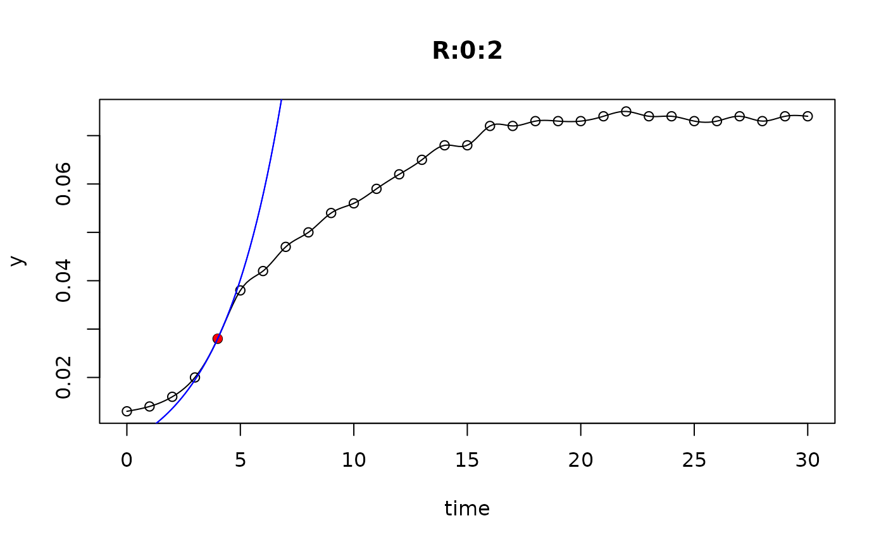
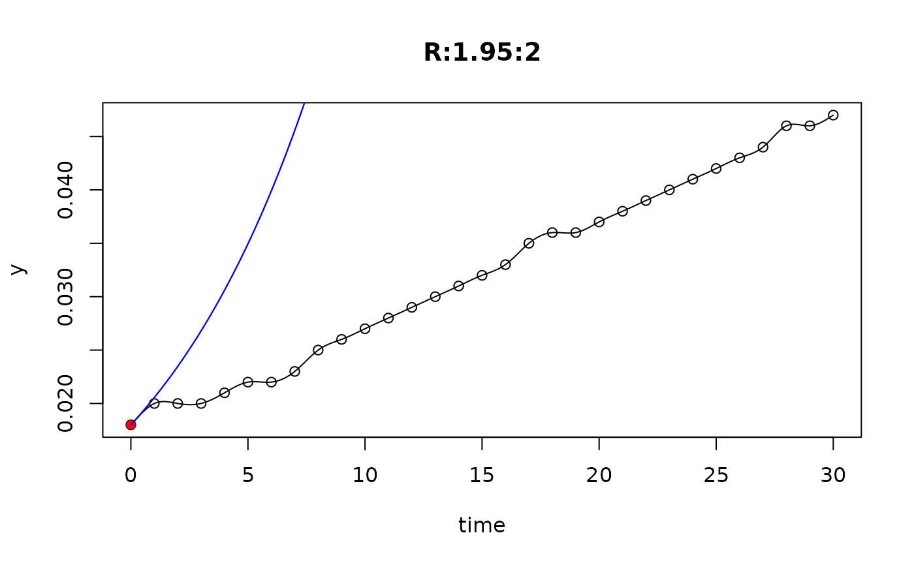

Methods to get the parameter names of a growth model or to get or set
identifiers of multiple_fits objects.
Methods
- Method for class
growthmodel: returns information about valid parameter names if a
pnamesattribute exists, elseNULL.NULL.- Method for class
multiple_fits: can be applied to objects returned by
all_growthmodels,all_splinesorall_easylinearrespectively. This can be useful for selecting subsets, e.g. for plotting, see example below.
Examples
## growthmodel-method
names(grow_baranyi)
#> [1] "y0" "mumax" "K" "h0"
## multiple_fits-method
L <- all_splines(value ~ time | strain + conc + replicate,
data = bactgrowth)
names(L)
#> [1] "D:0:1" "R:0:1" "T:0:1" "D:0.24:1" "R:0.24:1" "T:0.24:1"
#> [7] "D:0.49:1" "R:0.49:1" "T:0.49:1" "D:0.98:1" "R:0.98:1" "T:0.98:1"
#> [13] "D:1.95:1" "R:1.95:1" "T:1.95:1" "D:3.91:1" "R:3.91:1" "T:3.91:1"
#> [19] "D:7.81:1" "R:7.81:1" "T:7.81:1" "D:15.63:1" "R:15.63:1" "T:15.63:1"
#> [25] "D:31.25:1" "R:31.25:1" "T:31.25:1" "D:62.5:1" "R:62.5:1" "T:62.5:1"
#> [31] "D:125:1" "R:125:1" "T:125:1" "D:250:1" "R:250:1" "T:250:1"
#> [37] "D:0:2" "R:0:2" "T:0:2" "D:0.24:2" "R:0.24:2" "T:0.24:2"
#> [43] "D:0.49:2" "R:0.49:2" "T:0.49:2" "D:0.98:2" "R:0.98:2" "T:0.98:2"
#> [49] "D:1.95:2" "R:1.95:2" "T:1.95:2" "D:3.91:2" "R:3.91:2" "T:3.91:2"
#> [55] "D:7.81:2" "R:7.81:2" "T:7.81:2" "D:15.63:2" "R:15.63:2" "T:15.63:2"
#> [61] "D:31.25:2" "R:31.25:2" "T:31.25:2" "D:62.5:2" "R:62.5:2" "T:62.5:2"
#> [67] "D:125:2" "R:125:2" "T:125:2" "D:250:2" "R:250:2" "T:250:2"
## plot only the 'R' strain
# par(mfrow=c(4, 6))
plot(L[grep("R:", names(L))])



